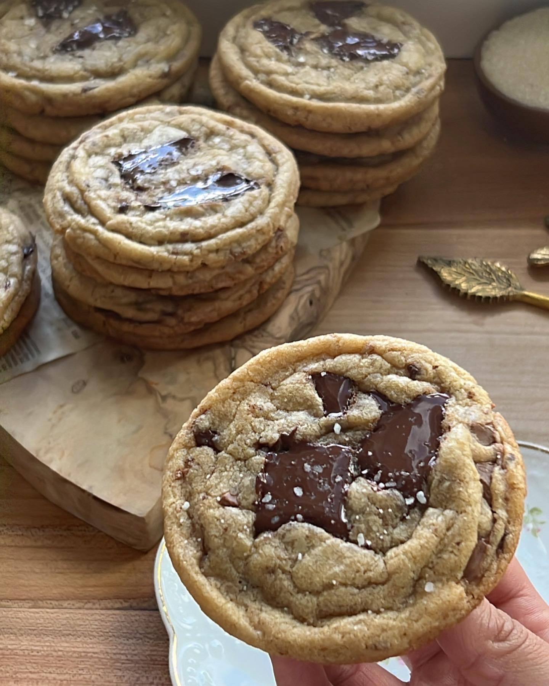

Semi-Sweet Chocolate Chip Cookies

Description
Want to know how to bake the most mouth-watering, apetite-enticing, gooey-center-with-crispy-edges type of cookies?
Well, you're in the right place! The following is a recipe to said cookie, made with the most common household ingredients. Enjoy!
Ingredients
- 1 1/2 cups Brown sugar
- 1/2 cup sugar
- 2 sticks Unsalted butter, melted 226 grams
- 1 Eggs
- 2 tsp Vanilla extract
- 2 tbsp Milk
- 3 cups All purpose flour
- 3/4 tsp Kosher salt
- 3/4 tsp Baking soda
- 1 tsp Cornstarch
- 1/4 tsp Cinnamon>
- 4 oz Semi sweet chocolate
- 4 oz Milk chocolate (you can substitute the milk chocolate for dark if you'd like)
- 8 oz Extra chocolate of your choice to top your cookies with before you bake them (optional)
Instructions
- Preheat your oven to 350°F (177°C) and line a baking sheet with parchment paper, or prep with baking spray.
- Melt the butter using the stove (make sure its on low heat!) or the microwave.
- In a large bowl, cream the butter, granulated sugar, and brown sugar together until light and fluffy using an electric mixer or a whisk for about 4 - 6 minutes. Make sure your melted butter is NOT hot or it will melt your chocolate!
- Add in the eggs, one at a time, and mix until fully incorporated. Stir in the vanilla extract and milk.
- In a separate bowl, whisk together the flour, baking soda, cornstarch, cinnamon, and salt.
- Slowly add the dry ingredients to the wet ingredients, mixing until just combined.
- Chop up the semi sweet, and milk chocolate. You can use chocolate chips instead, if you'd like.
- Fold in the chocolate chunks until evenly distributed throughout the dough.
- Using a cookie scoop or spoon, drop dough balls onto the prepared baking sheet. Make sure to leave enough space between each cookie to allow for spreading while baking.
- Bake the cookies for 12-14 minutes, or until the edges are golden brown and the center is set, but be careful not to over bake them. Even if they seem a bit underdone after 14 minutes, take them out of the oven as they will continue to set while they cool down.
- Remove the cookies from the oven and allow them to cool on the baking sheet for 5 minutes before transferring them to a wire rack to cool completely. Sprinkle them with flaky salt.
Annnd thats it!
This is not my original recipe, credits go to this recipe by Mariyum!
KUsgDYkAJHASASßs